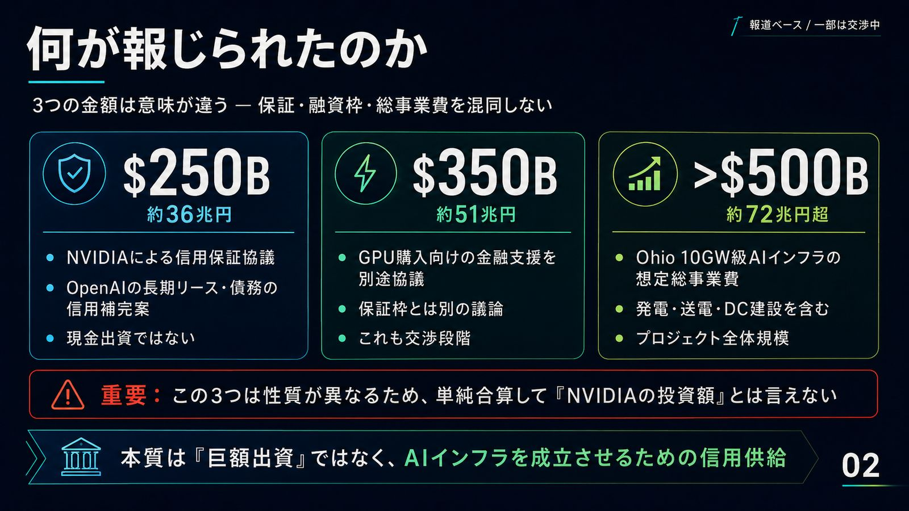
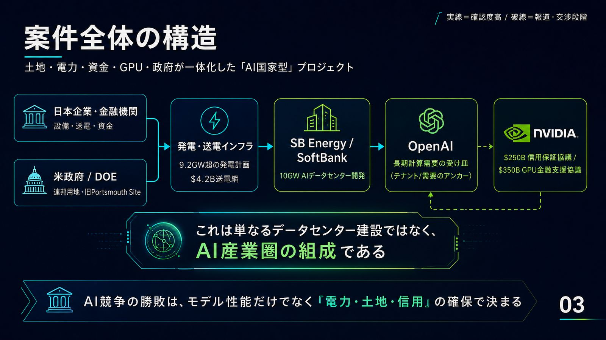
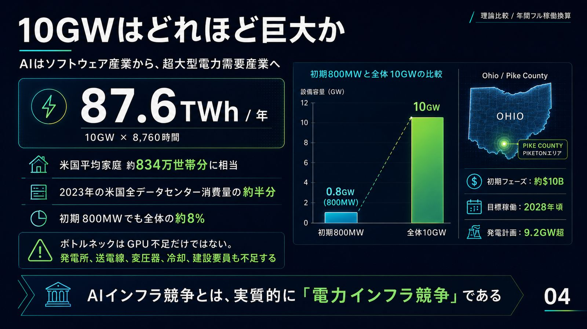
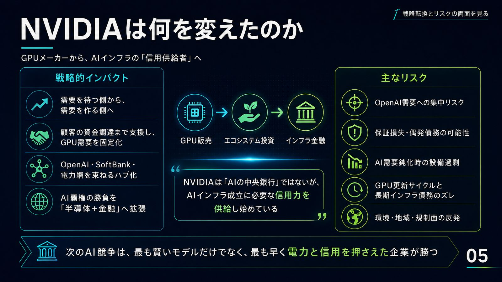
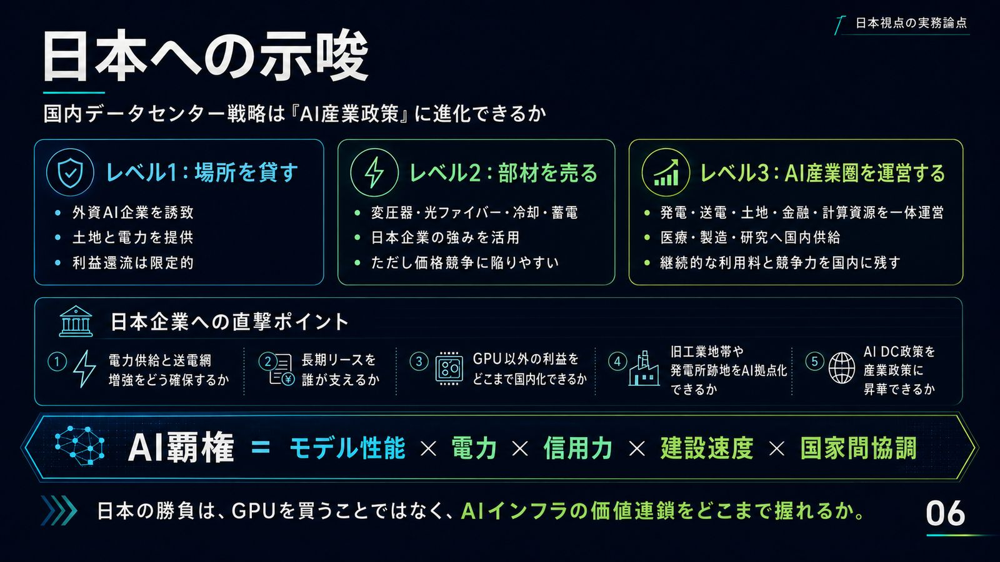

WHAT WAS REPORTED
3つの数字は、3つの異なる意味を持つ

$500B（約72兆円超）はオハイオ 10GW AI インフラの想定総事業費。3つは性質が異なるため単純合算して NVIDIA の投資額とは言えないという警告付き" loading="lazy" width="1600" height="900"> 🔍 クリックで拡大報道に登場する3つの金額は、経済的な性質がまったく違う。$250B は「保証」、$350B は「融資枠」、$500B 超は「事業費」——この区別を飛ばすと、ニュースの意味を読み違える。
- $250B（約36.3兆円）——OpenAI の長期リース・債務への信用補完案。NVIDIA が即座に支払う現金ではなく、履行不能時に補填しうる偶発債務。交渉中
- 最大 $350B（約50.8兆円）——NVIDIA 製 GPU 購入への金融支援。保証枠とは別枠の協議。交渉中
- >$500B（約72.5兆円超）——発電・送電・施設・設備を含む 10GW 全体の推定事業費（報道値）
換算は 1ドル＝145円。Reuters は関係各社・米政府から直ちにコメントを得られず、独自確認には至っていないと明記している。
DEAL STRUCTURE
データセンターではなく、「AI産業圏」を組成している

🔍 クリックで拡大従来のデータセンター開発は「土地を取得し、電力契約を結び、サーバーを設置する」プロジェクトだった。今回は発電所・送電線・政府所有地・国家間資金・銀行・半導体メーカー・AI 企業を同時に組成している。
- 資金と土地——日米戦略的貿易・投資協定に関連する約 $33.3B の日本側資金枠、米政府（DOE）の連邦所有地。SoftBank 発表では日本側12社を含む21社が参加意向（日立・三菱電機・フジクラ・住友電工・TDK・みずほ・MUFG・SMBC など）
- 電力と送電——9.2GW 以上の天然ガス発電、AEP Ohio による約 $4.2B の送電設備・765kV 送電線
- 需要と信用——OpenAI がアンカーテナントとして長期リース、NVIDIA が信用補完を協議（公式確認済みは実線、交渉段階は破線の関係）
国家のアナロジーで言えば——国土＝連邦所有地、エネルギー＝9.2GW 発電、通貨・信用＝NVIDIA 保証＋銀行＋日本資金、外交＝日米協定。AI を動かす経済圏が、国家に近い構造を持ち始めた。
SCALE OF 10GW
10GW は都市ではなく、「電力国家」の単位

🔍 クリックで拡大10GW を年間フル稼働させた場合の理論消費量は 87.6TWh／年。米国平均家庭約834万世帯分、2023年の米国全データセンター消費（約176TWh）のほぼ半分に相当する（稼働率により実際は下がる理論比較値）。
- 初期フェーズの 800MW（約$10B、2028年頃稼働目標）だけでも年約 7TWh＝約67万世帯分——それでも全体の 8% にすぎない
- この規模で先に尽きるのは GPU ではない。発電所・送電線・変圧器・ガスタービン・冷却水・建設要員がボトルネックになる
WHY OHIO
冷戦時代の核施設が、AI時代の計算施設へ
立地はオハイオ州 Pike County の旧 Portsmouth ウラン濃縮施設（Piketon 周辺）。冷戦期に核物質を濃縮した連邦所有地が、除染・解体を経て AI の計算拠点に転換される。SB Energy の土地利用料などを除染の加速に充てる設計まで組み込まれている。
- 1954年頃
ウラン濃縮施設として操業開始——冷戦期の核インフラ拠点
- 2001年
濃縮事業終了。以後、除染・解体・土地再利用が進む
- 2026年
AI データセンターの初期工事。DOE 用地と周辺民有地にまたがる計画
- 2028年頃
初期フェーズ 800MW の稼働予定
- 将来
最大 10GW へ拡張——AI 工業団地の標準モデル候補に
NVIDIA'S PIVOT
NVIDIA は「需要を待つ会社」から「需要を造る会社」へ

🔍 クリックで拡大NVIDIA の事業構造は3段階で変わってきた。①半導体販売（顧客の設備投資に依存）→ ②エコシステム投資（AI 企業への出資、CUDA・ネットワークの標準化）→ そして今回の③インフラ金融——リース保証と GPU 購入ファイナンスで、将来の GPU 需要そのものを契約によって造る段階だ。
- 銀行側の疑問——「20年超のリース料を誰が保証するのか」「GPU が陳腐化しても返済できるのか」。OpenAI は投資適格級の信用格付けを持たないため、NVIDIA の信用力が入ることで貸し手のリスク認識が下がり、資金調達コストが低下しうる（Reuters Breakingviews の指摘）
- NVIDIA 自身も年次報告書で、顧客からの保証・金融支援要請の可能性と、信用損失・プロジェクト遅延・資金回収リスクを開示している
- 2025年には OpenAI と「少なくとも 10GW の NVIDIA システム導入・最大 $100B の投資検討」の基本合意も発表済み（今回案件との重複範囲は未公表）
THE $750B TRAP
「NVIDIA の7,500億ドル投資」と足してはいけない
NVIDIA と SK Group が発表した $500B 超の案件は、データセンター・HBM・通信・AI ファクトリーを含む複数企業による長期イニシアチブと基本合意であり、NVIDIA 単独の現金投資額ではない。オハイオの $250B は保証案（偶発債務・未契約）。この2つを足して「NVIDIA の $750B 投資」とするのは二重に不正確だ。
| 項目 | 金額 | 円換算（145円/$） | 性質 | 確認状態 |
|---|---|---|---|---|
| 送電網整備 | $4.2B | 約0.61兆円 | 設備投資 | 公式計画 |
| 初期 800MW | $10B | 約1.45兆円 | 初期事業費 | 公表・報道 |
| 日本側発電資金 | $33.3B | 約4.83兆円 | 発電プロジェクト資金 | 公式計画 |
| NVIDIA 保証案 | $250B | 約36.25兆円 | 信用保証・偶発債務 | 報道・交渉中 |
| GPU 金融支援案 | 最大 $350B | 約50.75兆円 | 購入ファイナンス | 報道・交渉中 |
| 全体事業費 | >$500B | 約72.5兆円超 | 総事業費の推定 | 報道値 |
事業費・保証額・融資枠は性質が異なり、合計してよい数字ではない。AI インフラ報道では、発表済み投資・基本合意・保証枠・購入契約・将来支出が同じドル表記で並ぶ。足し算より先に、数字の性質を確認する必要がある。参考の規模感として、$500B（約72.5兆円）は日本の2026年度補正後一般会計（約125.4兆円）の約58%に相当する。
BULL vs BEAR
AI 版ハイウェイ構想か、ベンダーファイナンスの危険な拡大か
🐂 強気シナリオAI 版インターステート・ハイウェイが完成する
- NVIDIA 保証により資本コストが下がり、発電とデータセンターを同時建設できる
- OpenAI が長期的な計算能力を確保し、米国が AI 計算能力を国内に固定する
- 日本企業が電力機器・金融・部材で参加し、NVIDIA は GPU・ネットワーク・ソフトウェアの標準を維持
- 成功すれば単独のデータセンターではなく、今後の AI 工業団地の標準モデルになる
🐻 弱気シナリオ6つのリスクが同時に積み上がる
- 信用リスク——OpenAI がリース義務を履行できなければ NVIDIA に保証損失
- 循環取引リスク——顧客を保証し、その顧客が NVIDIA 製品を購入する構造
- 技術寿命の不一致——GPU は数年で世代交代、発電・建物の債務は数十年
- 建設リスク——ガスタービン・変圧器・送電線・建設要員の不足
- エネルギー・環境リスク——9.2GW のガス発電、水利用・湿地・排出への地元懸念
- 集中リスク——数社の AI 需要に地域経済と巨大設備が依存
JAPAN'S OPTIONS
日本の勝負は、GPU を買うことではない

🔍 クリックで拡大オハイオ案件には既に日本側が深く関与している——銀行・証券（みずほ・MUFG・SMBC のプロジェクトファイナンス）、送電・電線（フジクラ・住友電工）、電力設備（日立・三菱電機・東芝）、電子部品（TDK・村田製作所・パナソニック）、そして事業統合の SoftBank。だが「参加」の深さには3つのレベルがある。
- レベル1：場所を貸す——外資 AI 企業を誘致し、電力と土地だけを提供。国内への利益還流は限定的
- レベル2：部材を売る——変圧器・光ファイバー・冷却・蓄電で強みを活かす。ただし価格競争に晒される
- レベル3：AI 産業圏を運営する——発電・送電・土地・金融・計算資源を一体運営し、国内の企業・大学・医療・製造業へ計算能力を提供。継続的な利用料と産業データを国内に蓄積
日本国内への問いは具体的だ——10GW 級の低廉な電力をどこで確保するか。送電網増強費を誰が負担するか。長期リースを誰が保証するか。旧工業地帯や発電所跡地を AI 拠点に転換できるか。
THE NEW EQUATION
AI覇権 ＝ モデル性能×電力×信用力×建設速度×国家間協調
次の AI 競争は、誰が最も賢いモデルを作るかだけではない。誰が発電所と金融を先に押さえるかで決まる。AI はソフトウェア産業から、電力・金融・外交を必要とする基幹産業へ移行した。
2026-07-27 — AI Intelligence Hub / Day Slide